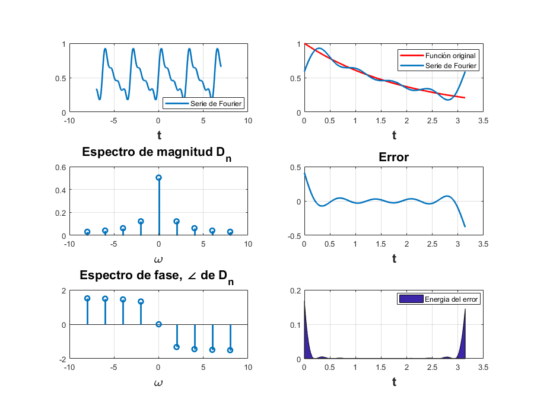
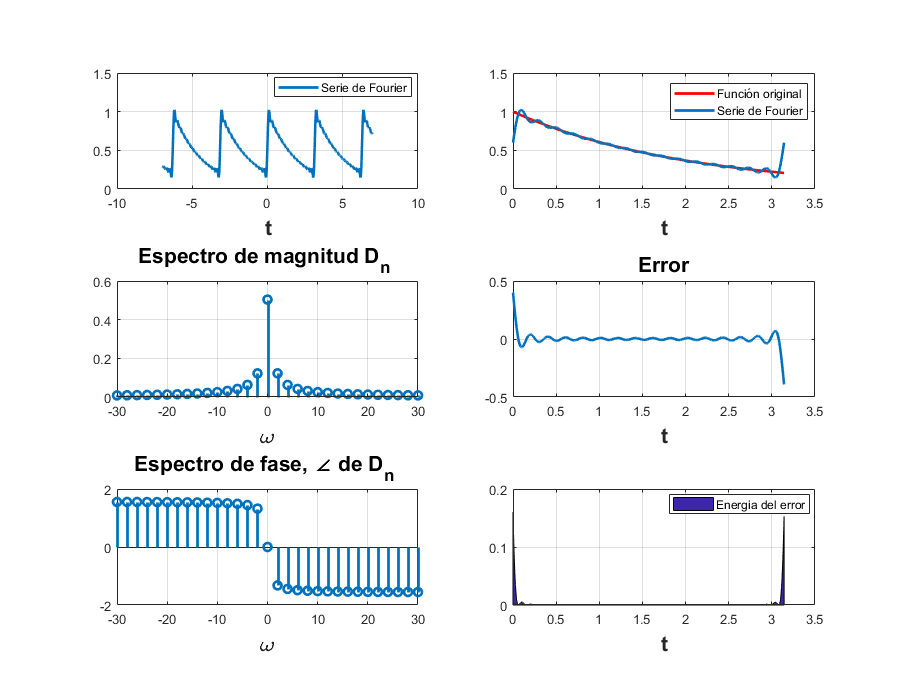
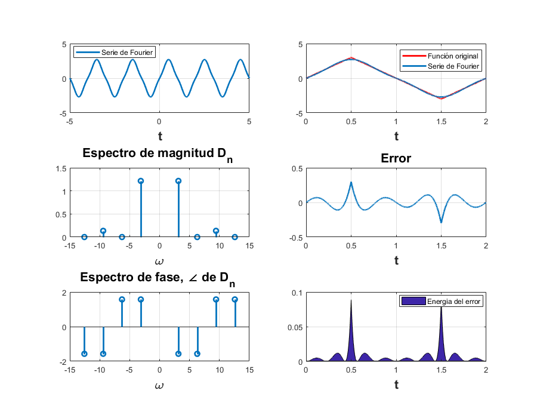
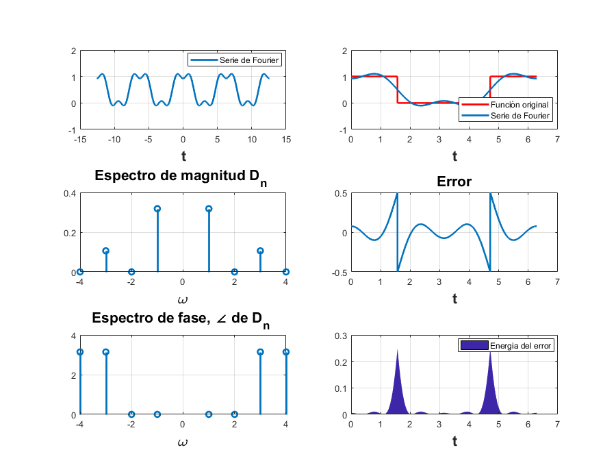
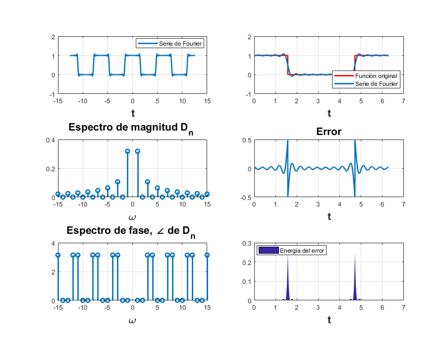
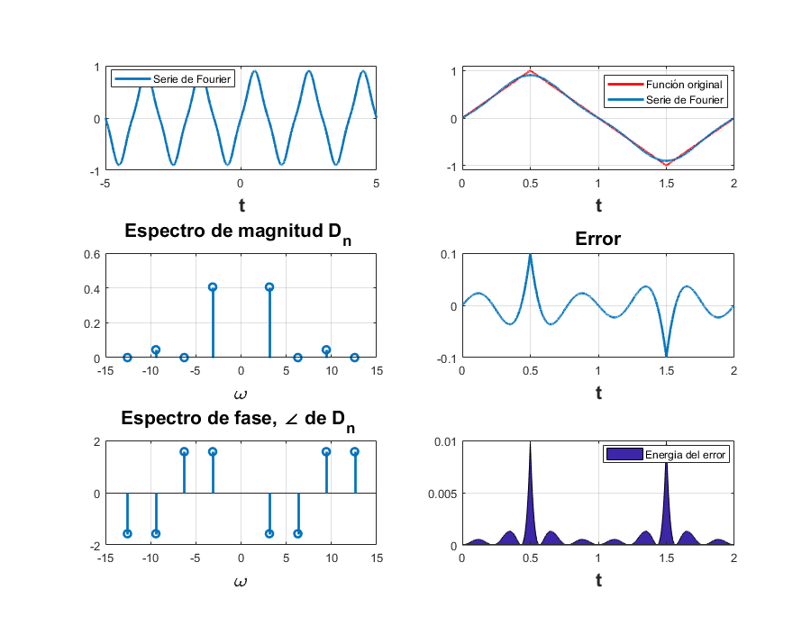
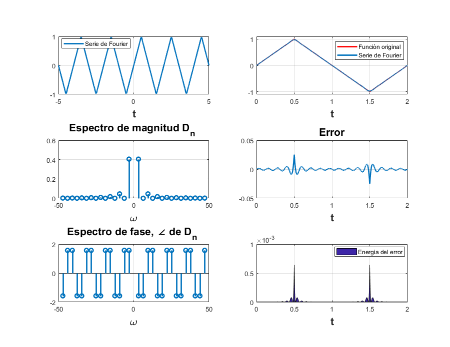
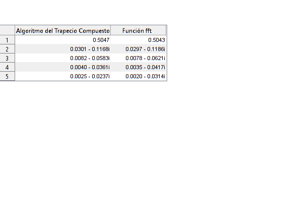

Práctica 5: Series de Fourier en tiempo continuo
Contents
Integrantes
- Alonso Valdes Oren Jesus
- Hernández García José Eduardo
- Luna Reyes Rodrigo
Objetivos
- Realizar gráficas de series de Fourier exponenciales y trigonométricas en tiempo continuo
- Manipulación de instrucciones en MATLAB
- Calculo númerico de los coeficientes de Fourier
Introducción
Se puede procesar Dn numéricamente usando la transformada de Fourier en tiempo discreto. la cual usa muestras de una señal peródica x(t) sobre un perodo "T", por lo tanto hay No=To/T números de muestra en un periodo To. Para encontrar la relación entre Dn y las muestras de x(t), considerar Ecuaciones que no sé cómo se hagan en MATLAB, página 449 del lathi(PDF) Donde x(kT) es la Kth muestra de x(t) y Más ecuaciones En la práctica es imposible hacer que T tienda a 0. Podemos hacer T muy pequeña, pero no 0, lo que hará que los datos aumenten sin límites. Por lo tanto, ignoraremos el límite de T con el entendimiento implícito de que T es razonablemente pequeño. El valor distinto de cero T dará como resultado algún error de cálculo, que es inevitable en cualquier evaluación numérica de una integral. Los el error resultante de una T distinta de cero se denomina error de alias. Por lo tanto, podemos expresar la ecuación Ecuación del Lathi Ahora, de la ecuación \Omega_o No = 2pi. Por lo tanto e^{jOmega_o (N+K0)} =e^{j Omeha:o K} sigue: D_{n -No} =D_{n} La propiedad de periodicidad quiere decir que más alla de n)No/2, los coeficienres
Ejemplo 6.1
Se realiza la gráfica de la serie de fourier para la función exponencial e^(-t/2), también se grafica el error y su energía, el espectro de magnitud y el espectro de fase.
t0 = 0; tf = pi; dn = @(n) 0.504/(1+4*n*j); d0 = 0.504; f = @(t) exp(-t/2); armo = 4; a = -7; b = 7; sfc(t0,tf,dn,d0,f,armo,a,b);
Se realiza el mismo ejercicio para 15 armónicos.
armo = 15; sfc(t0,tf,dn,d0,f,armo,a,b);
Ejemplo 6.2
Se realiza la gráfica de la serie de fourier para la función triangular con amplitud A (en este caso A=3), también se grafica el error y su energía, el espectro de magnitud y el espectro de fase.
t0 = 0; tf = 2; A=3; dn = @(n) -(4*A)/(n^2*pi^2)*sin(n*pi/2)*j; d0 = 0; f=@(t) A*sawtooth(pi*(t)+pi/2,0.5); armo = 4; a = -5; b = 5; sfc(t0,tf,dn,d0,f,armo,a,b);
Se realiza el mismo ejercicio para 15 armónicos.
armo = 15; sfc(t0,tf,dn,d0,f,armo,a,b);
Ejemplo 6.4
El ejemplo 6.4 se repite el caso del ejemplo 6.2.
Ejemplo 6.5
Se realiza la gráfica de la serie de fourier para la función cuadrada con amplitud A (en este caso A=3), también se grafica el error y su energía, el espectro de magnitud y el espectro de fase.
t0 = 0; tf = 2*pi; dn = @(n) (1/(n*pi))*sin(n*pi/2); d0 = 1/2; f=@(t) (1/2)*square(t+pi/2)+0.5; armo = 4; a = -4*pi; b = 4*pi; sfc(t0,tf,dn,d0,f,armo,a,b);
Se realiza el mismo ejercicio para 15 armónicos.
armo = 15; sfc(t0,tf,dn,d0,f,armo,a,b);
Ejemplo 6.7
Ejemplo 6.2 con código del Ejemplo C6.2
En este ejercicio usaremos un código similar al mostrado en el Ejemplo C6.2 del libro Linear Systems and Signals de B. P. Lathi. en este caso graficaremos la misma función del Ejemplo 6.2
A = 1; f = @(t) A*sawtooth(pi*(t)+pi/2,0.5); t = linspace(-5,5,10001); sumterms = zeros(16, length(t));sumterms(1,:)=0; for n=1:size(sumterms,1)-1 sumterms(n+1,:)=(8*A)/((n^2)*(pi^2))*sin(pi*n/2)*sin(n*t*pi); end x_N = cumsum (sumterms);
El número de armónicos se calcula en base al valor de N. Ejemplo: x_N(N+1,:)
dn = @(n) -(4*A)/(n^2*pi^2)*sin(n*pi/2)*j; % Gráfica para 4 armónicos % Graficar 5 repeticiones figure (11) hFig = figure(11); set(hFig, 'Position', [0 0 900 900]) subplot(3,2,1) plot(t,x_N(4+1,:),'LineWidth',2) grid on legend('Serie de Fourier','Location','Best') xlabel('t','FontWeight','bold','FontSize',16) % Recalcular para t=0:0.0001:2 t=0:0.0001:2; sumterms = zeros(16, length(t));sumterms(1,:)=0; for n=1:size(sumterms,1)-1 sumterms(n+1,:)=(8*A)/((n^2)*(pi^2))*sin(pi*n/2)*sin(n*t*pi); end x_N = cumsum (sumterms); % Graficar señal y serie de fourier para 4 armónicos subplot(3,2,2) plot(t,f(t),'r','LineWidth',2) grid on hold on plot(t,x_N(4+1,:),'LineWidth',2) legend('Función original','Serie de Fourier ','Location','Best') xlabel('t','FontWeight','bold','FontSize',16) axis ([0 2 -1.1 1.1]); % Gráfica del error e=f(t)-x_N(4+1,:); subplot(3,2,4) plot(t,e,'LineWidth',2) title('Error','FontWeight','bold','FontSize',16) xlabel('t','FontWeight','bold','FontSize',16) axis auto grid on % Energía del error subplot(3,2,6) e=f(t)-x_N(4+1,:); area(t,e.^2) legend('Energia del error','Location','Best') xlabel('t','FontWeight','bold','FontSize',16) axis auto grid on % Espectro de magnitud absdn=zeros(1,length(-4:4)); cont=1; for i =-4:4 if i==0 absdn(cont)=0; end absdn(cont)=dn(i); cont=cont+1; end subplot(3,2,3) stem(pi*(-4:4),abs(absdn),'LineWidth',2) title('Espectro de magnitud D_n ','FontWeight','bold','FontSize',16) xlabel('\omega','FontWeight','bold','FontSize',16) grid on % Gráfica del espectro de fase subplot(3,2,5) stem(pi*(-4:4),angle(absdn),'LineWidth',2) title('Espectro de fase, \angle de D_n ','FontWeight','bold','FontSize',16) % % xlabel('\omega','FontWeight','bold','FontSize',16) grid on % Ahora se mustra la gráfica de la misma función para 15 armónicos t = -5:0.001:5; sumterms = zeros(16, length(t));sumterms(1,:)=0; for n=1:size(sumterms,1)-1 sumterms(n+1,:)=(8*A)/((n^2)*(pi^2))*sin(pi*n/2)*sin(n*t*pi); end x_N = cumsum (sumterms); % Graficar 5 repeticiones figure (12) hFig = figure(12); set(hFig, 'Position', [0 0 900 900]) subplot(3,2,1) plot(t,x_N(15+1,:),'LineWidth',2) grid on legend('Serie de Fourier','Location','Best') xlabel('t','FontWeight','bold','FontSize',16) % Recalcular para t=0:0.0001:2 t=0:0.0001:2; sumterms = zeros(16, length(t));sumterms(1,:)=0; for n=1:size(sumterms,1)-1 sumterms(n+1,:)=(8*A)/((n^2)*(pi^2))*sin(pi*n/2)*sin(n*t*pi); end x_N = cumsum (sumterms); % Graficar señal y serie de fourier para 4 armónicos subplot(3,2,2) plot(t,f(t),'r','LineWidth',2) grid on hold on plot(t,x_N(15+1,:),'LineWidth',2) legend('Función original','Serie de Fourier ','Location','Best') xlabel('t','FontWeight','bold','FontSize',16) nn=-15:15; axis ([0 2 -1.1 1.1]); % Gráfica del error e=f(t)-x_N(15+1,:); subplot(3,2,4) plot(t,e,'LineWidth',2) title('Error','FontWeight','bold','FontSize',16) xlabel('t','FontWeight','bold','FontSize',16) axis auto grid on % Energía del error subplot(3,2,6) e=f(t)-x_N(15+1,:); area(t,e.^2) legend('Energia del error','Location','Best') xlabel('t','FontWeight','bold','FontSize',16) axis auto grid on % Espectro de magnitud absdn=zeros(1,length(-15:15)); cont=1; for i =-15:15 if i==0 absdn(cont)=0; end absdn(cont)=dn(i); cont=cont+1; end subplot(3,2,3) stem(pi*(-15:15),abs(absdn),'LineWidth',2) title('Espectro de magnitud D_n ','FontWeight','bold','FontSize',16) xlabel('\omega','FontWeight','bold','FontSize',16) grid on % Gráfica del espectro de fase subplot(3,2,5) % % stem(pi*(-15:15),angle(absdn),'LineWidth',2) % % title('Espectro de fase, \angle de D_n ','FontWeight','bold','FontSize',16) % % xlabel('\omega','FontWeight','bold','FontSize',16) grid on 
Algorítmo del trapecio
Cálculo de D0 a D4 de la función e^(-t/2) usando el algortimo del trapecio compuesto
d_ = zeros(1,5); T=pi; t0=0; w0=2*pi/(T-t0); for n=1:5 f_1 = @(x) exp(-x/2).*cos(-(n-1)*w0*x); f_2 = @(x) exp(-x/2).*sin(-(n-1)*w0*x); d_(n)=(1/T)*trapito(f_1,15,t0,t0+T)+(1/T)*trapito(f_2,15,t0,t0+T)*j; end
Cálculo de D0 a D4 de la función e^(-t/2) usando la función ftt
N_0 = 256;T_0=pi;T=T_0/N_0;t=(0:T:T*(N_0-1))'; x=exp(-t/2); x(1)=(exp(-pi/2)+1)/2; D_n=fft(x)/N_0;
Tabla comparativa entre los Dn calculados
f = figure;
t = uitable(f);
d = {d_(1),D_n(1,1);d_(2),D_n(2,1);d_(3),D_n(3,1);d_(4),D_n(4,1);d_(5),D_n(5,1)};
t.Data = d;
t.ColumnName = {'Algoritmo del Trapecio Compuesto',' Función fft '};
t.Position = [0 260 333 112];
